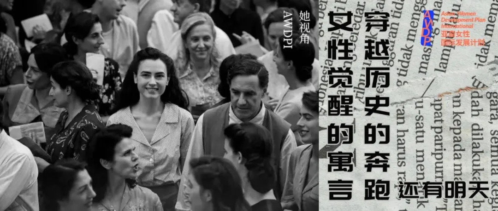
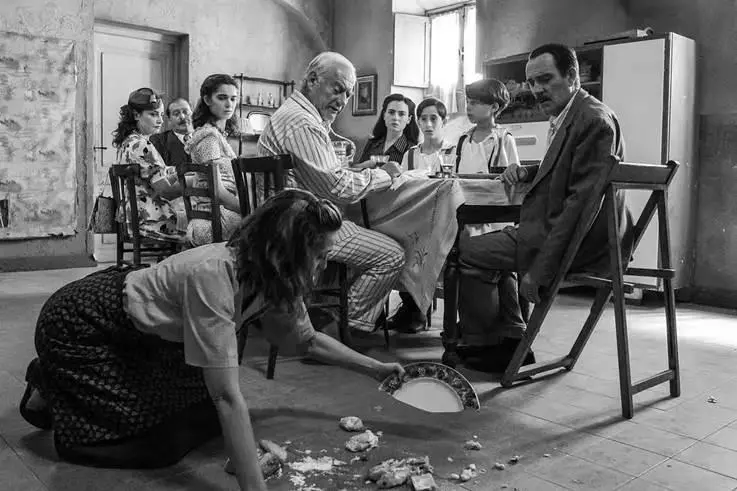
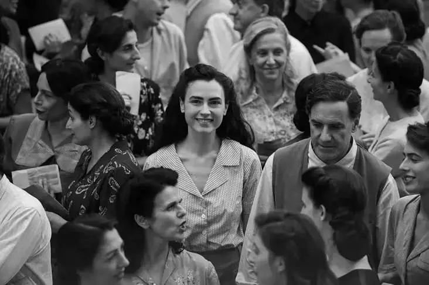

“我们手里紧攥着选票，
就像紧握着情书。”
——电影《还有明天》
在黑白影像中，意大利新现实主义电影《还有明天》用一场穿越历史的奔跑，为女性觉醒写下温柔却有力的注脚。当迪莉娅攥着选票冲向投票站，这个被家务和暴力困住的中年主妇，终于在1946年那个春天，迈出了挣脱父权牢笼的第一步。
这部由宝拉·柯特莱西自编自导自演的电影，以二战后的意大利为背景，用新现实主义的冷峻笔触，将镜头对准被家务、暴力与歧视层层包裹的女性日常，在荒诞幽默与残酷现实的交织中，勾勒出一幅女性从个体觉醒走向集体抗争的精神图谱。
女性命运的代际镜像：
父权制暴力下的生命对话
电影开场的耳光像一记重锤，砸开了迪莉娅的日常：清晨六点，丈夫伊万诺的巴掌准时落在她脸上，没有任何征兆，仿佛这是婚姻里天经地义的起床仪式。迪莉娅摸摸发烫的脸颊，起身给三个孩子准备早餐，给瘫痪在床的公公擦身，似乎这脸上的红印只是不小心蹭到的锅底灰。
这个场景重复了整整十八年，她的两个儿子在目睹自己的母亲被打时连眼皮都不抬一下。
导演用轻快的钢琴旋律包裹暴力，伊万诺的拳头随着探戈节奏起落，镜头旋转着掠过迪莉娅踉跄摔倒的脚步。《我的太阳》的温柔音符与淤青的脸颊形成荒诞的对位。这种将暴力美学化的处理，却恰恰直抵父权制的本质：殴打早已成为婚姻的“晨间仪式”，辱骂已经被包装成“爱的教育”。
在修伞铺里，男工们一边调笑一边把最难缠的活丢给迪莉亚，她的计件工资永远比男性少三成。在富人家打针线，主人家太太用香水掩盖迪莉娅身上的廉价肥皂味，却不忘克扣两里拉。回到家，伊万诺把她辛苦赚的钱摔在桌上，骂她“连买面包都算错账”，却对自己的嫖娼开销视而不见。
最令人窒息的是瘫痪公公的性骚扰：当迪莉娅给他擦身时，他浑浊的手突然摸向她的臀部，嘴角咧出恶心的笑容。这个细节巧妙呼应了伊万诺父亲对儿子的“家暴教育”：“不要每天打，要偶尔往死里打，让她怕你。”这种父权体制下代际传递的暴力逻辑，在两个男性角色的对话中暴露无遗。
与这种父子间延续的暴力相对应的是，女儿玛塞拉对迪莉娅的残酷质问：**“你为什么不反抗？你为什么不跑？”。**在女儿眼中，迪莉娅是懦弱的化身。
而女儿即将踏入的看似美满的婚姻，正是自己挣扎了二十年的牢笼。阻止女儿订婚的桥段也充满着黑色幽默：迪莉娅用意大利面计算炸药用量，通过晾衣绳设计逃生路线，最后请美国大兵威廉炸毁咖啡店。这个影片段落没有英雄主义的悲壮，反而像一场家庭主妇的“烹饪实验”，本质上是母亲迪莉娅为了女儿用荒诞对抗荒诞的无奈之举。

从个体逃离到集体觉醒：
选票作为女性觉醒的象征
在迪莉娅布满褶皱的围裙口袋里，藏着一封被反复揉皱又展平的信。观众和迪莉娅一样，以为这是旧情人尼诺的私奔邀约，毕竟他总说“北方有更好的生活”。她偷偷攒下工钱，用碎布缝制新衣，甚至在丈夫的鼾声中练习“逃亡路线”。
然而，当镜头对准信纸上的文字时，所有人屏住了呼吸：那不是情书，而是一张选民证。
这一反转，事实上是导演对传统女性叙事最辛辣的嘲讽。在无数故事中，女性总被设定为“等待拯救”或“为爱出逃”的客体。但迪莉娅的选择撕碎了这种幻想。她奔向的不是另一个男人的怀抱，而是投票站。
镜头扫过罗马街头，成群结队的女性攥着选票走向投票箱。她们中有人穿着褪色的婚纱，有人牵着女儿的手，有人主动地抹去口红，因为沾了口红的选票会作废。
**“我们紧握选票，就像紧握情书。”这句台词在电影中如同一记重锤。在父权社会里，女性的情书总与“被选择”有关：被丈夫选择，被家庭接纳，被社会认可。但选票不同，它是女性第一次作为“主体”**写下自己的名字。
导演用近乎诗意的镜头语言对比了两场戏：一场是迪莉娅年轻时与伊万诺热恋，两人在广场共舞，背景音乐唱着“你是我生命的礼物”；另一场是中年迪莉娅与一群陌生女性并肩而立，用沉默的凝视逼退愤怒而狂躁的丈夫。
前者是浪漫的陷阱，后者是清醒的反抗。当女性集体闭着嘴哼唱时，没有台词，没有口号，只有喉咙深处的震动。
这一次，沉默不再是屈服的象征。影片中女人们坚定的眼神、一致的手势和无声的旋律终于化作一股沉默的海啸，冲垮了父权制的耳膜。
在投票站上，迪莉娅与玛塞拉的眼神交会成为母女关系的破冰时刻，也揭示着女性觉醒的代际意义。
玛塞拉看着母亲庄重地写下名字，终于读懂那些藏在内衣里的私房钱、深夜缝补的背影。母亲的隐忍不是懦弱，而是用血肉之躯为女儿铺路。当玛塞拉将遗失的选票塞进母亲手心，母女之间的代际隔阂被打破。两个女性完成了女性主体觉醒的交接。前一代用伤痕积累勇气，后一代用行动延续抗争。

黑色幽默与温柔抗争：
女性主义的绚烂表达
宝拉·柯特莱西的镜头里充满了意大利式的幽默与浪漫，却在荒诞与滑稽的夹缝中藏着尖锐的批判。
迪莉娅将私房钱塞进面饼、内衣甚至瘫痪公公的床垫下；伊万诺在父亲去世时用夸张表演伪装成一个孝子，在教堂前哭得肝肠寸断，可转身便偷喝了亡父的葡萄酒；邻居太太们围坐在死去的公公身边，表面上在祈祷，实则用最恶毒的诅咒“送别”这个压迫了她们一辈子的老男人。
然而，电影最动人的，还是那些温柔的抗争时刻。迪莉娅给女儿梳头时说：**“你可以成为任何你想成为的人，不是因为你要嫁给谁，而是因为你是你自己。”**这句话，是她对自己失败人生的总结，也是对女儿未来的期许。
在投票站里，老妇人颤抖着擦掉口红，年轻女孩挺起胸膛递上选票，她们的眼神里没有恐惧，只有对明天的期待。这些瞬间，让女性主义不再是冰冷的理论，而是融入日常生活的温暖力量。
《还有明天》的女性主义表达是一种**“温柔的反叛”**，它没有宏大的战争场面，却在厨房的油烟、修伞铺的木屑、投票站的台阶上，展开了一次次无声的性别革命。女性主义的力量隐藏在每个说“不”的勇气里：拒绝一次无理的辱骂，坚持一份工作的权利，为女儿争取一次受教育的机会。
迪莉娅的故事也并非虚构的英雄传奇，而是无数普通女性的真实剪影：她们是母亲、是妻子、是打零工的女工，却在某个清晨，被一张选票唤醒了沉睡的自我。
它不渲染鲜血，却让淤青成为勋章；不歌颂牺牲，却让琐碎日常变成革命现场。正是这些日常的女性抗争，如同迪莉娅奔跑时扬起的裙摆，在历史的长河中，终将汇聚成改变的浪潮。
1
END
1
撰稿｜朱雨姝
编辑｜伊哲
封面&排版｜池一诺
Avoice海外华人女性保护项目最新介绍链接